De Lichtroute
Wanneer op 5 december Sinterklaas weer uit ons land vertrekt hangen de meeste mensen hun kerstverlichting weer op. Dit is iets wat ons tijdens onze reis van en naar school ook opviel. Tijdens onze reis hebben wij alle kerstverlichting geturfd om in kaart te brengen in hoeverre onze routes verlicht zijn. Hierbij zetten we onze data af tegen een open dataset die kijkt naar het energieverbruik van de vier plaatsen die op de kaart staan. Klik op een van de buttons om te zien hoe ieder van onze routes verlicht zijn.
Op Tom zijn route komt hij langs een aantal steden. Per stad wordt de volgende hoeveelheid energie verbruikt per huishouden:
| Stad | Energieverbruik in kWh | Getelde kerstverlichting |
|---|---|---|
| Kolhorn | 3020 | 5 |
| Alkmaar | 2490 | 20 |
| Amsterdam | 2050 | |
| Haarlem | 2420 | 33 |
| Waarderpolder | 3510 | 15 |
| Spaarndam | 2870 | 37 |
| Utrecht Centraal | 2360 |